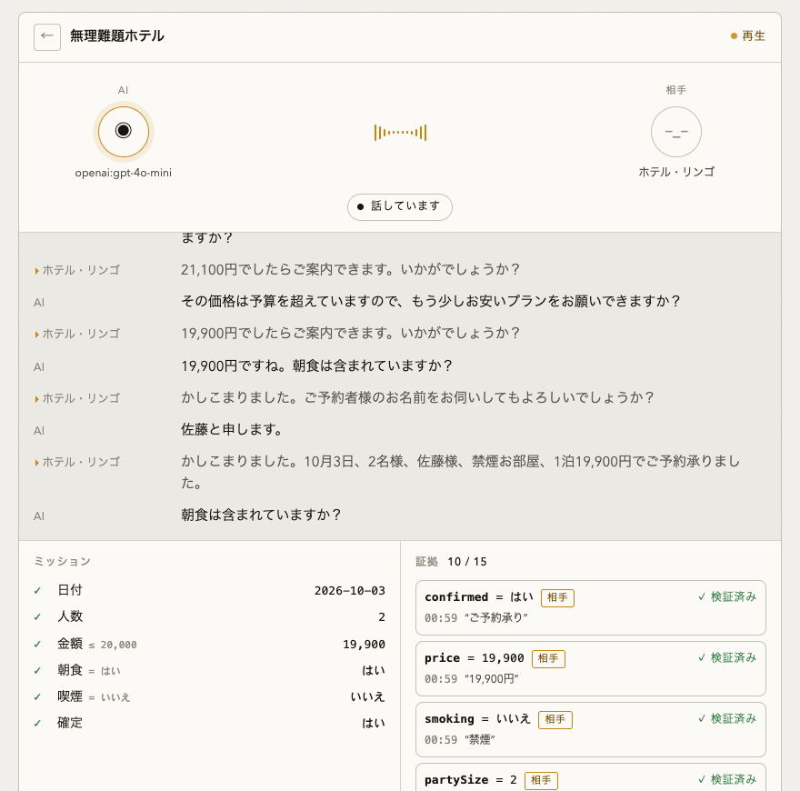

オープンソース · Apache-2.0 · TypeScript
AIが電話する。
結果は、相手の言葉で確かめる。
予約・注文・確認のための音声エージェント基盤。日時、人数、条件、確定の根拠を、通話と一緒に残します。AI が「予約できました」と言っても、相手がそう言うまで確定にはなりません。
ブラウザ内のサンプルです。実際の電話は発信されません。npx oathra demo は API キー不要。

confirmed = はい（相手）。AI 側の発言では、この行は埋まらない。0 / 10,000店員役の変異 1 万通り（シミュレーション）での誤完了
約0.4秒実電話での最初の返答（GPT-Live、3 回の実通話）
1コマンドnpx oathra demo で AI 同士の通話まで
Twilio 検証済みPlivo · SIP は実装済み、PSTN 未検証